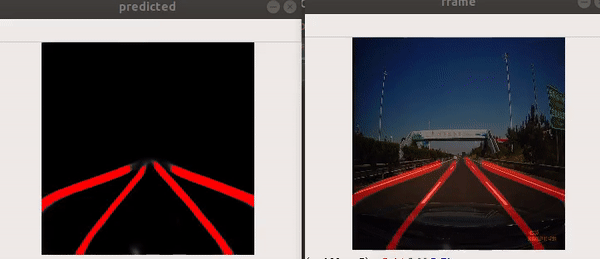

U-Net for Lane Line Detection in Autonomous Vehicles
March 2020

Lane line detection is an important output of an autonomous vehicle’s perception system to be used as inputs for path planning algorithms among other important tasks. This project involves training U-Net, a convolutional neural network designed for medical image segmentation, on the CULane dataset to segment lane lines from images.
Generating training data
The CULane dataset was annotated in .txt files containing the (x, y) coordinates of points on the lane line. I generated the segmentation masks by filling pixels along this line with a value of 1, denoting that the pixel contains a lane line marking. This can be shown with the following pseudocode.
for pointa, pointb in points:
drawline(segmentation_mask, pointa, pointb, width=x)
We can visualize the architecture of U-Net above, the architecture consists of several convolutional blocks downsampled using max pool operations and upsampled using interpolation-based upsampling. The output is a tensor of the same height and width as the input, but the channels denote the segmentation masks. With the training data above, it was fairly straightforward to translate U-Net from medical applications to the domain of autonomous vehicles.